Planificar
Entradas, dudas, plan y pruebas esperadas.
Laboratorio práctico de Edison Salinas
Prepara un encargo para tu agente, registra lo que ejecutaste y aprende a verificar la integridad de la evidencia.

Crea una ficha para el trabajo de tu agente y ejecútalo en la CLI que tengas configurada. Usa la bitácora y la cadena para conservar y revisar el resultado.
Convierte tu proyecto en contexto, entregables y criterios de aceptación. Descarga cuatro instrucciones de trabajo.
Crear una ficha ZIP ObservarVincula cada prueba con su proyecto, anota el resultado observado y deja una referencia que puedas consultar.
Registrar una prueba LOCAL ComprobarEnlaza decisiones y resultados con SHA-256. Exporta la cadena y comprueba su contenido cuando lo necesites.
Abrir el verificador SHA-256Fundamentos de blockchain
Calcula el SHA-256 del resultado de una prueba. Añade un punto y vuelve a calcularlo. Compara las dos huellas para detectar el cambio.
El cálculo ocurre en tu navegador. En el laboratorio puedes enlazar varios registros y comprobar su orden y contenido.
Abrir la cadena de evidenciasPuedes repetir el cálculo para comparar.
Elige una tarea pequeña de tu proyecto de blockchain e IA. Define el resultado esperado y cómo verificarlo. El kit organiza las instrucciones en cuatro archivos para que puedas ejecutarlas en tu propia CLI.
Preparar mi kitEntradas, dudas, plan y pruebas esperadas.
Cambios acotados a tus instrucciones.
Resultados contrastados con tus criterios.
Archivos, comprobaciones y límites.
Descarga las instrucciones y úsalas con tu CLI configurada. Esta web no ejecuta modelos ni comandos.